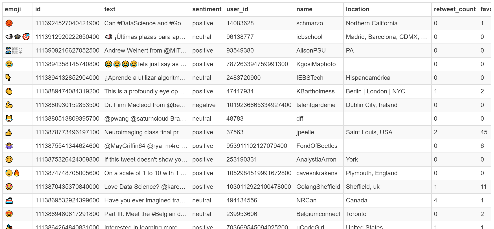
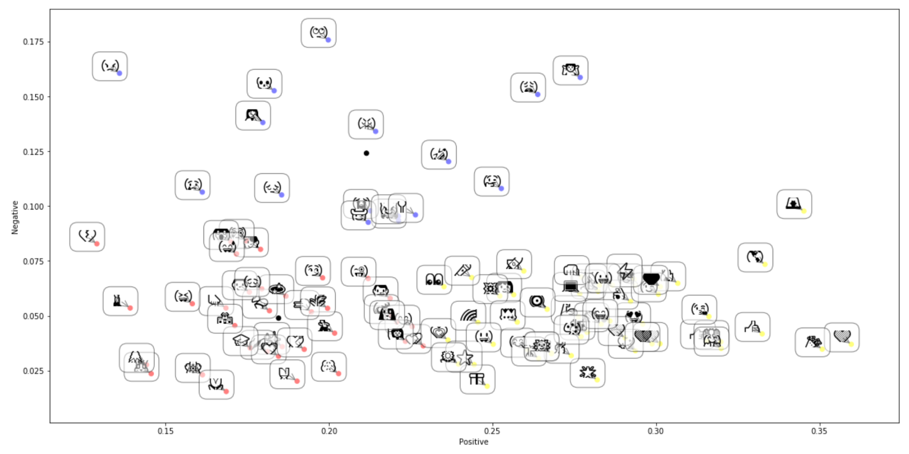
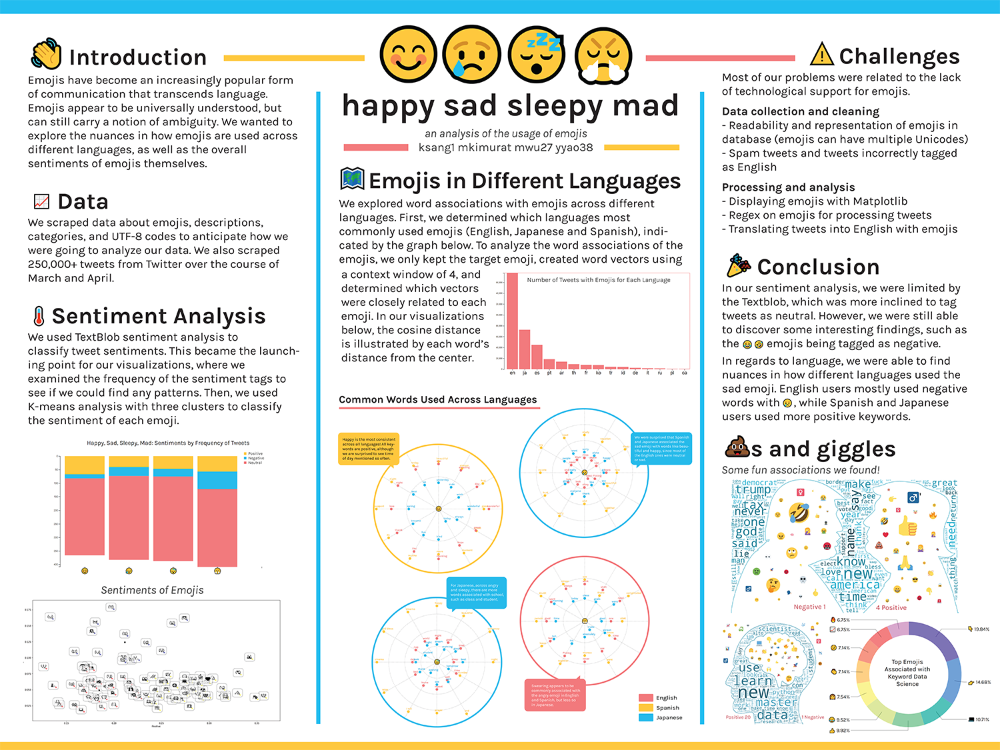

HappySadSleepyMad 😊😢😴😤
May 2019 | Data Analysis and Data Viz
if you've been on my page for a little while you might have noticed that
I really like emojis. Emojis have become a staple of modern conversation that
transcends languages, used all over the world.
HappySadSleepyMad was a semester-long project for Brown's "Data Science" course.
Our goal was not to merely compare the meaning of emojis across different
languages— because let's face it, 😀 probably means the same thing around the
world— but to detect the nuances in emoji usage.
Our team consisted of 4 people, each of us representing one emoji in the project name!
- Katherine Sang — 😊
- Iris (YunYun) Yao — 😢
- Maggie Wu — 😴
- Me — 😤
Data Collection
Data collection was probably the most important part of the project, because it forms
the foundation for everything that follows. Though we originally planned to scrape
from multiple sources such as Facebook, Instagram, and Twitter, we quickly learned that
Facebook has strict restrictions on their data policy which ruled Facebook and Instagram out.
In the end, we settled for Twitter, which, by the way, also required us to request an API key,
and we failed to receive a response for the entire semester. We ended up acquiring an API key through
some less-than-scrupulous methods... but we had good intentions!
We scraped Twitter for tweets containing emojis for one month from March to April, collecting nearly 300,000 tweets
during that time. We then inserted our data into a SQLite DB, and it looked a little like this:

As you can see, we collected information such as username, region, sentiment, and iteraction
counts. You can also see that the data is not exactly clean because not every Twitter user utilizes
geo-tagging... so we also had to deal with that. 😅
Sentiment Analysis
Working with only English-language tweets, we used TextBlob (a sentiment analysis library)
and K-Means with 3 clusters to determine which emojis are positive, negative,
and neutral.
Here our are results:

Positive:
👩🔥😍💙🙏💖👍💛💜😊💗👀😎💚💪👉 👏🎉🙌😘💰💞🎶🚀🌈💥👌😁🚨🎁😉💻🖤 👑🎤👊🌟🤗💃⭐🍳🎨⚡🌱🌎🌻😀🌞😃
👩🔥😍💙🙏💖👍💛💜😊💗👀😎💚💪👉 👏🎉🙌😘💰💞🎶🚀🌈💥👌😁🚨🎁😉💻🖤 👑🎤👊🌟🤗💃⭐🍳🎨⚡🌱🌎🌻😀🌞😃
Negative:
😂😭🤣🤔😩🤷🤠😔😈💀😢😤🤦📍😡🙄
😂😭🤣🤔😩🤷🤠😔😈💀😢😤🤦📍😡🙄
Neutral:
👨✨💕💋🌸💓💦👧👇👦💔😳🌊🌹💘🎓🐰🏃😋😆 💫💨😜😱🙋😅🏫😌🐶🌲😏🌷🚶🌳🌾
👨✨💕💋🌸💓💦👧👇👦💔😳🌊🌹💘🎓🐰🏃😋😆 💫💨😜😱🙋😅🏫😌🐶🌲😏🌷🚶🌳🌾
Isn't it interesting how 😂 and 🤣 are considered negative emojis? Perhaps they're used
in a lot of sarcastic contexts— but that's a whole different data science project!
Context Analysis
Following sentiment analysis, we performed case studies of context analysis on English, Japanese, and Spanish.
These languages were simply the languages for which we had collected the most tweet data!
To clarify, context analysis is when you find what words are used in similar contexts. Note that this is slightly different
from synonyms, although synonyms would definitely be used in very similar contexts. For example, if you have the
sentences "Mary walks to the bedroom" and "John goes to the bathroom," then "Mary" and "John" are words
used in similar contexts, but they aren't synonyms.
We used our tweet data to construct sparse word vectors, which we then used to discover words that were
used in a similar
context for each emoji in 😊😢😴😤. Once we had the most similar words for every emoji, we created radial graphs
using Javascript's D3 library.
Happy
Sad
Sleepy
Mad
Note that RED = English,
YELLOW = Spanish, and
BLUE = Japanese.
The distance between the words and the emoji in the center represents the cosine similarity of contexts.
Poster
All of this culminated into a final poster, shown below:

You can also read about our project here.
Sidenote — our poster received the "Best Visualization" award out of 40 groups!
Sidenote — our poster received the "Best Visualization" award out of 40 groups!
Reflection
This was one of my first long-term project based classes at Brown, and it was a really
rewarding experience! It was perfect intersection between data and design and if I could
I would do it all over again.
Had we had more time, we would have liked to create a Deep Learning model that could
predict the emojis from the text of a tweet. We did attempt this with KNN, SVM, &
DecisionTree, but the models had at most an accuracy of 3 percent— pretty terrible.
Deep Learning is in itself a different field, but it would be fun to see where this
could take us!